Art Gallery
Here are a few charcoal drawings of mine that I've completed at UCF while taking art classes.
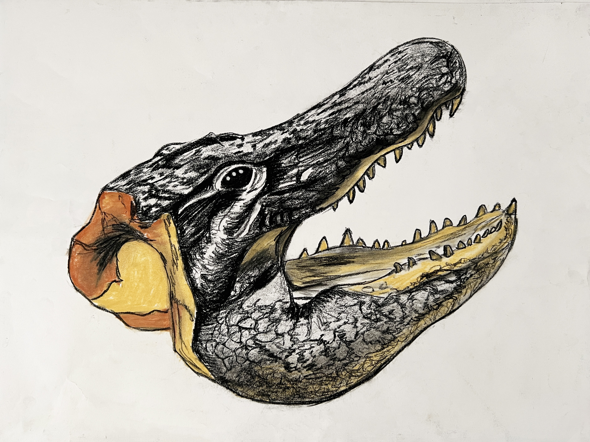
Crocodile Head
Created using vine/compressed charcoal, and pastel colors for the warmer colors. Capture the texture of the crocodile using different techniques with charcoal. After, add few pastel colors to contrast.
Created using vine/compressed charcoal, and pastel colors for the warmer colors. Capture the texture of the crocodile using different techniques with charcoal. After, add few pastel colors to contrast.
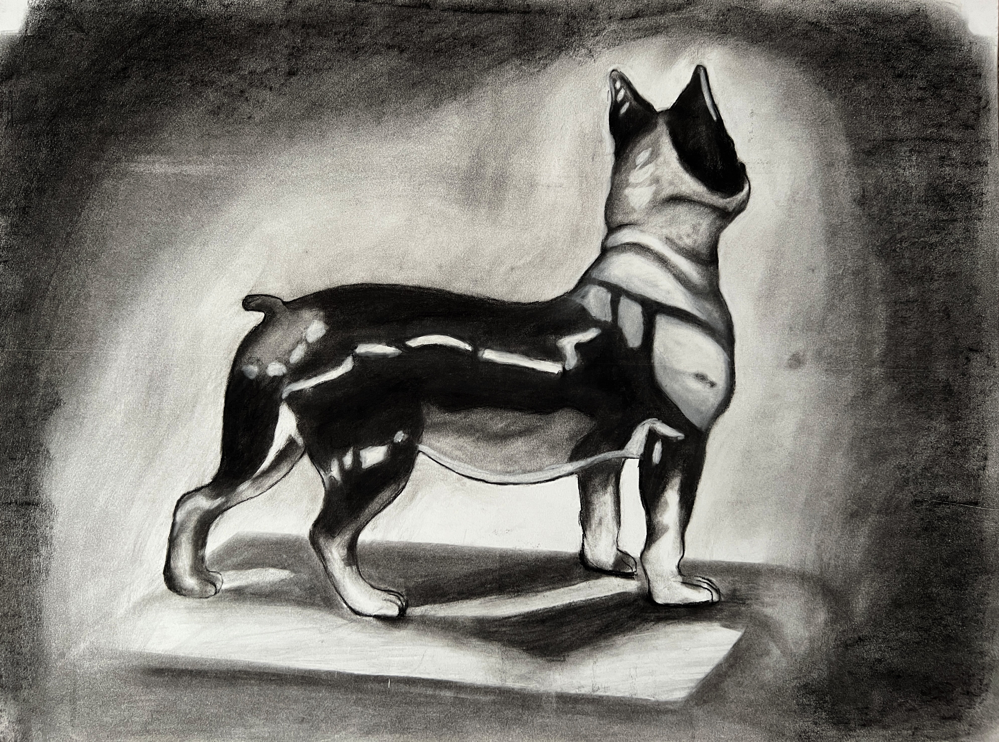
Ceramic Boston Terrier
Created using vine/compressed charcoal, and white pastels for the highlights. After encapsulating the ceramic feel, emphasize the highlights with white charcoal.
Created using vine/compressed charcoal, and white pastels for the highlights. After encapsulating the ceramic feel, emphasize the highlights with white charcoal.

Created using charcoal pencil, white pastels, and compressed charcoal. Main focus, proportion. Accurately depict the texture and shape of the cerami boston terrier using charcoal and a blending brush within the space.
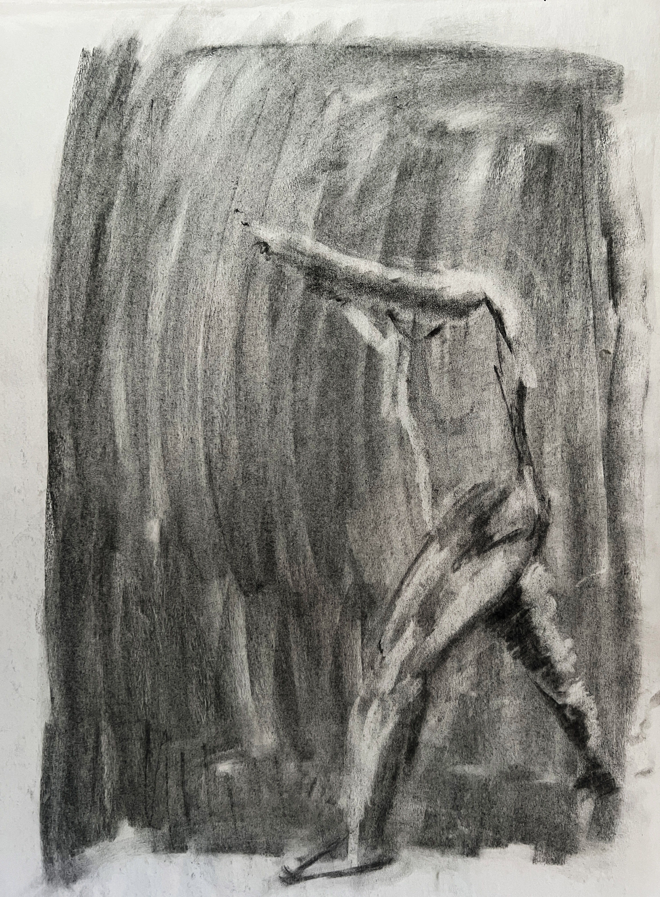
Man in Motion
Created using vine/comresseed charcoal, and a kneeded eraser. After smereing the paper, with accuracy, capture the highlights and lowlights of the man swinging a pole.
Created using vine/comresseed charcoal, and a kneeded eraser. After smereing the paper, with accuracy, capture the highlights and lowlights of the man swinging a pole.
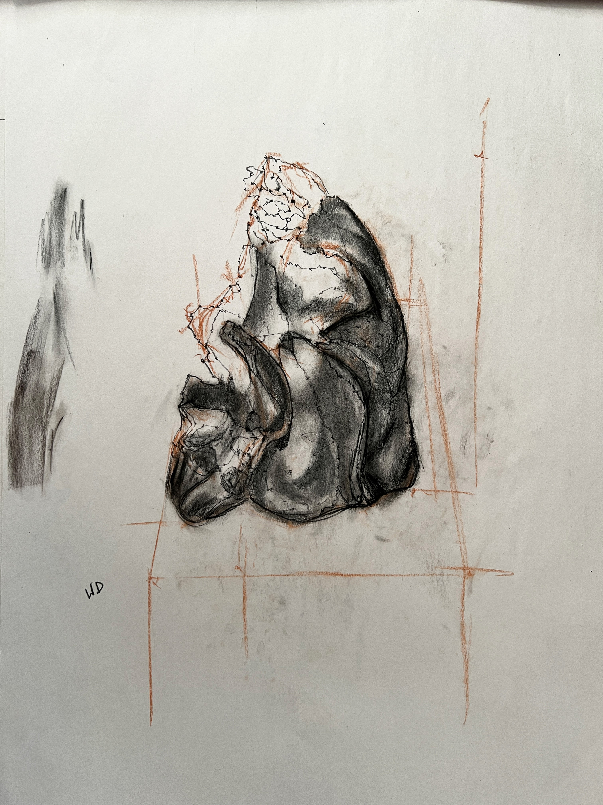
Glass Case Figure
Created using pastel, vine charcoal, adn charcoal pencil. Accurate depict the figure in the class using the stippling technique, and proceed to add value with charcoal.
Created using pastel, vine charcoal, adn charcoal pencil. Accurate depict the figure in the class using the stippling technique, and proceed to add value with charcoal.
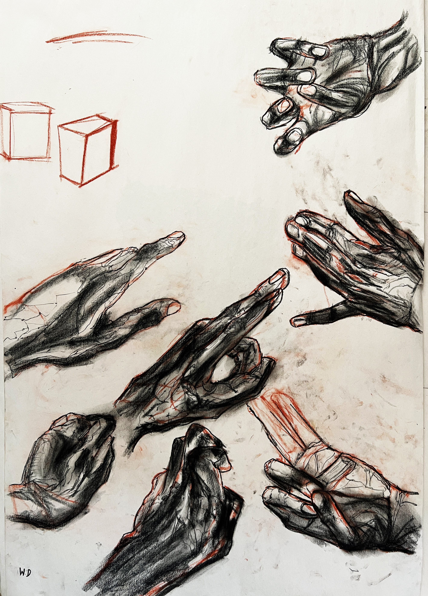
Hands
Created using pastel, vine/compressed charcoal, and charcoal pencil. Accurately depict the demensions a hand by stippling and adding value with charcoal.
Created using pastel, vine/compressed charcoal, and charcoal pencil. Accurately depict the demensions a hand by stippling and adding value with charcoal.
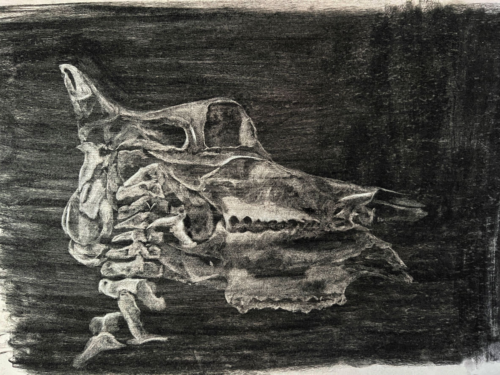
Horse Skull (2022)
Creating using vine/compressed charcoal, charcoal pencil, and kneeded eraser. Captures the dimensions of the horse skull on the head of a skeleton using the subtractive-drawing technique to show value within highlights and lowlights.
Creating using vine/compressed charcoal, charcoal pencil, and kneeded eraser. Captures the dimensions of the horse skull on the head of a skeleton using the subtractive-drawing technique to show value within highlights and lowlights.
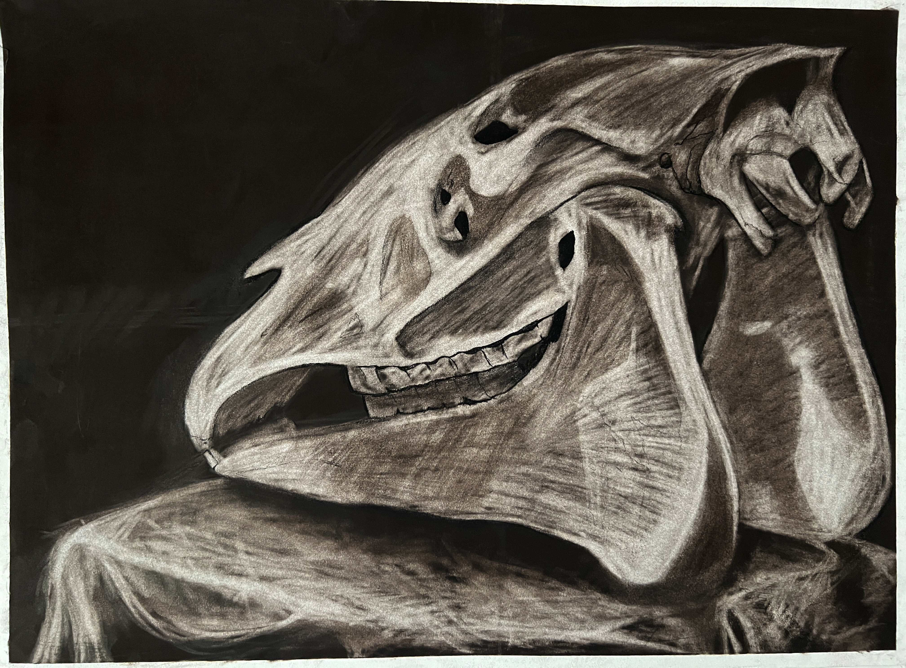
Horse Skull (2019)
Creating using vine/compressed charcoal, charcoal pencil, and kneeded eraser. After smering the background to all black, capture the dimensions of the horse skull on a table using the subtractive-drawing technique.
Creating using vine/compressed charcoal, charcoal pencil, and kneeded eraser. After smering the background to all black, capture the dimensions of the horse skull on a table using the subtractive-drawing technique.
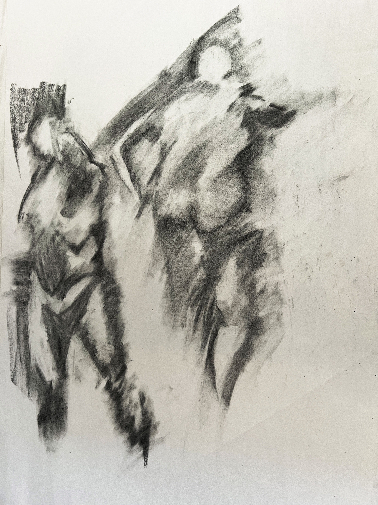
Posing Man
Creating using vine/compressed charcoal, charcoal pencil, and kneeded eraser, and smudging with finger. Accurately depict the live model using highlights and lowlights as well as vigorous smudging.
Creating using vine/compressed charcoal, charcoal pencil, and kneeded eraser, and smudging with finger. Accurately depict the live model using highlights and lowlights as well as vigorous smudging.
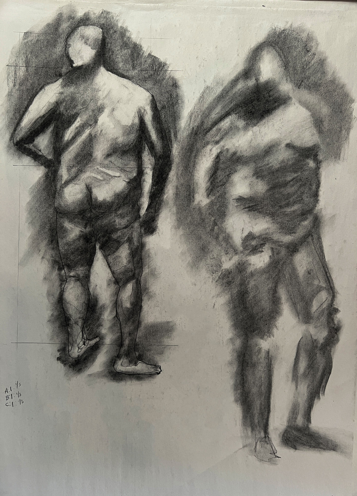
Posing Man 2
Creating using vine/compressed charcoal, charcoal pencil, and kneeded eraser, and smudging with finger. Accurately depict the live model using highlights and lowlights.
Creating using vine/compressed charcoal, charcoal pencil, and kneeded eraser, and smudging with finger. Accurately depict the live model using highlights and lowlights.
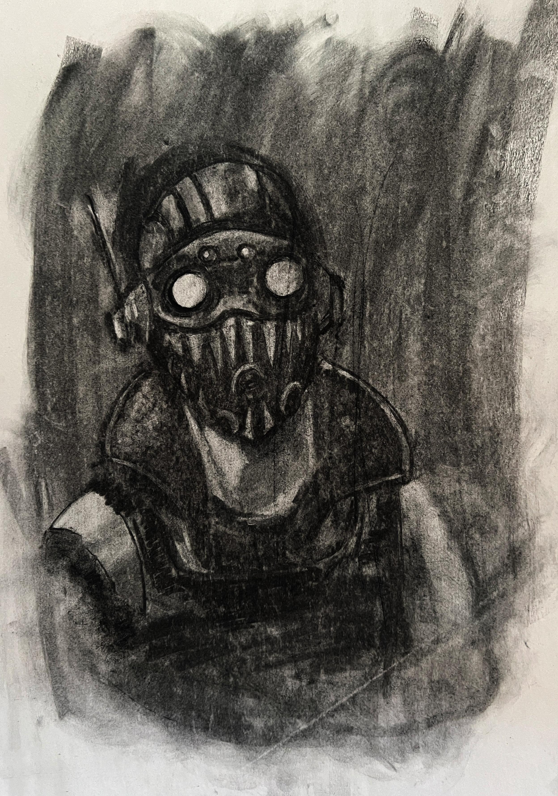
Octane (Apex Legends)
Created using vine/compressed charcoal, a kneeded eraser, and white charcoal. Accurately depict a video game character.
Created using vine/compressed charcoal, a kneeded eraser, and white charcoal. Accurately depict a video game character.
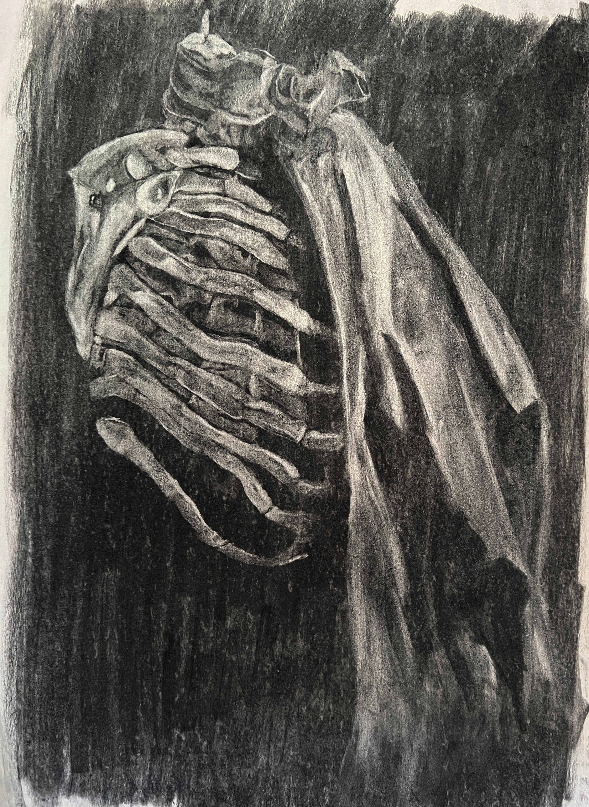
Skeleton Ribcage with Cloth
Created using vine/compressed charcoal, and a kneeded eraser. Cature the bone-like intricacies while matiatining the feeling of the cloth.
Created using vine/compressed charcoal, and a kneeded eraser. Cature the bone-like intricacies while matiatining the feeling of the cloth.
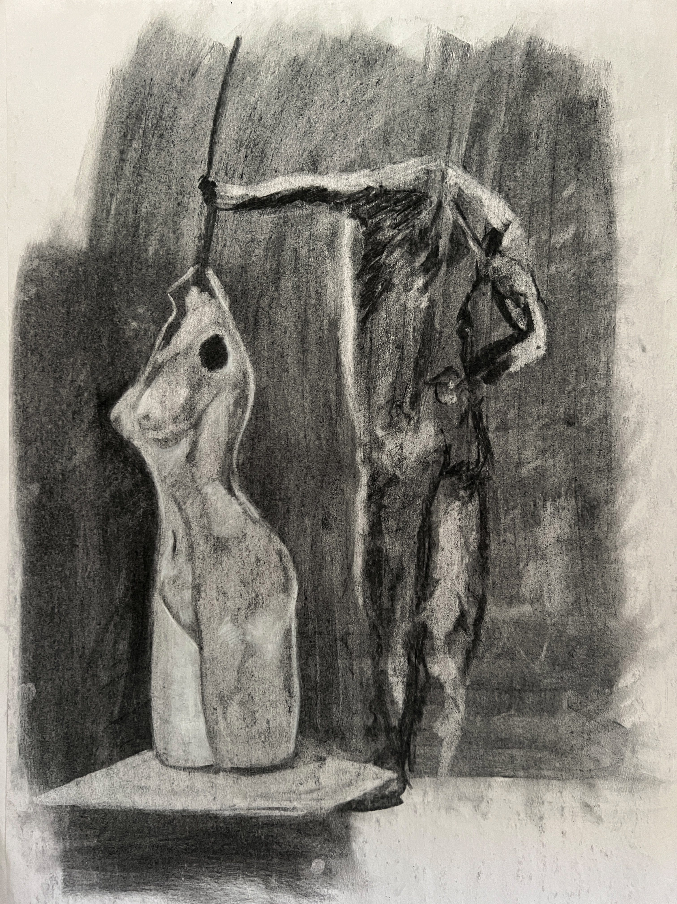
Man with pole & Mannequin of a Woman
Created using vine/compressed charcoal and a kneeded eraser. Once the impression of the man was is contstructed, overlay the mannequin beside it.
Created using vine/compressed charcoal and a kneeded eraser. Once the impression of the man was is contstructed, overlay the mannequin beside it.
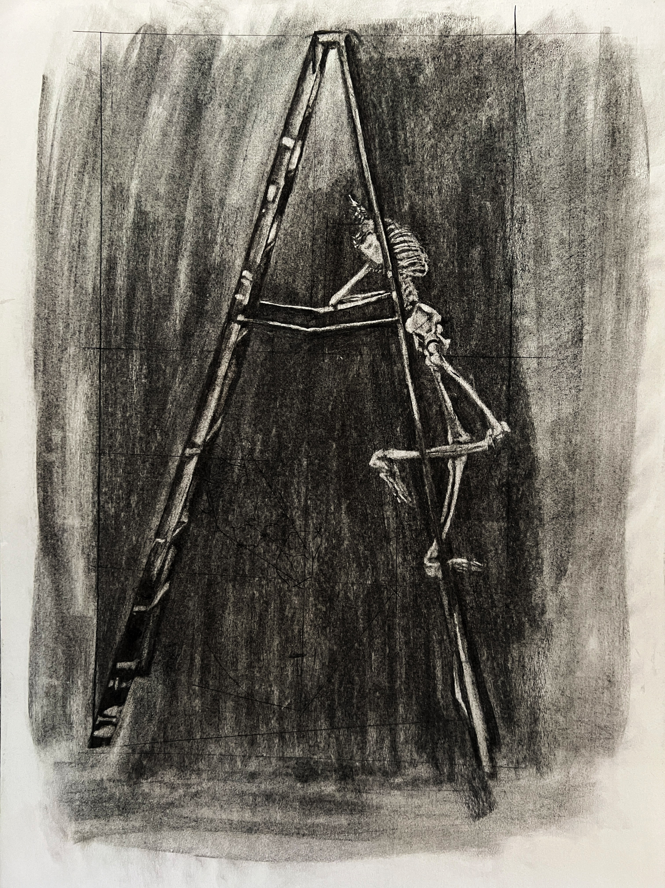
Skeleton on Ladder
Created using vine charcol (to smere paper) and a kneeded eraser (to develop the skeleton using a subtractive-drawing technique)
Created using vine charcol (to smere paper) and a kneeded eraser (to develop the skeleton using a subtractive-drawing technique)